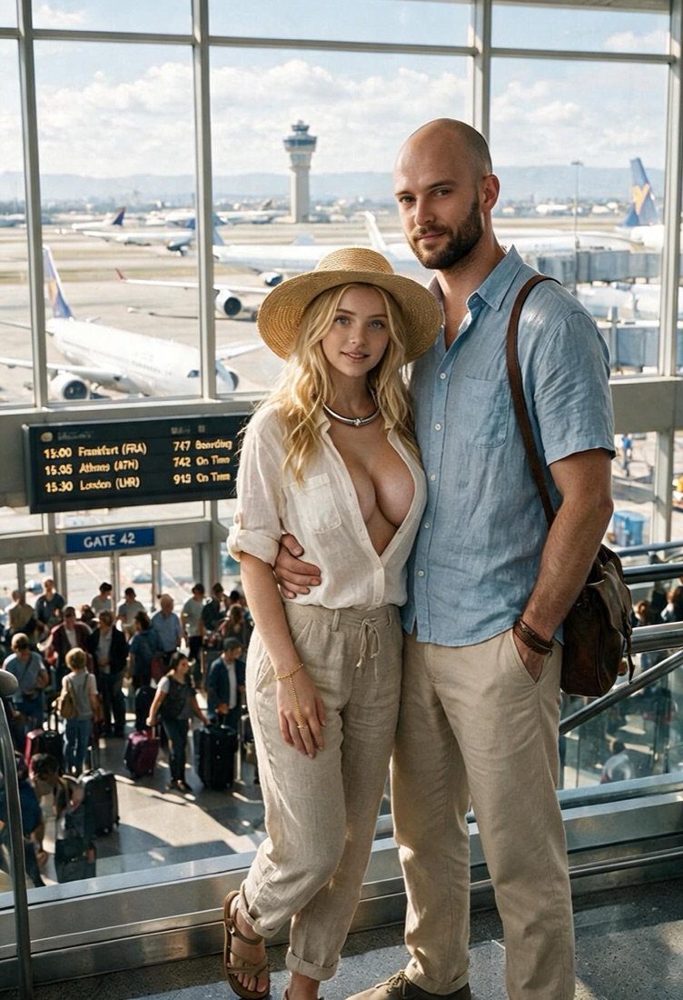
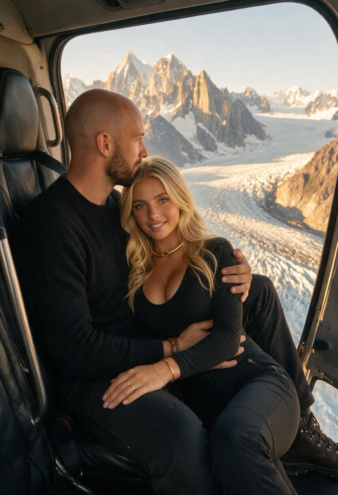
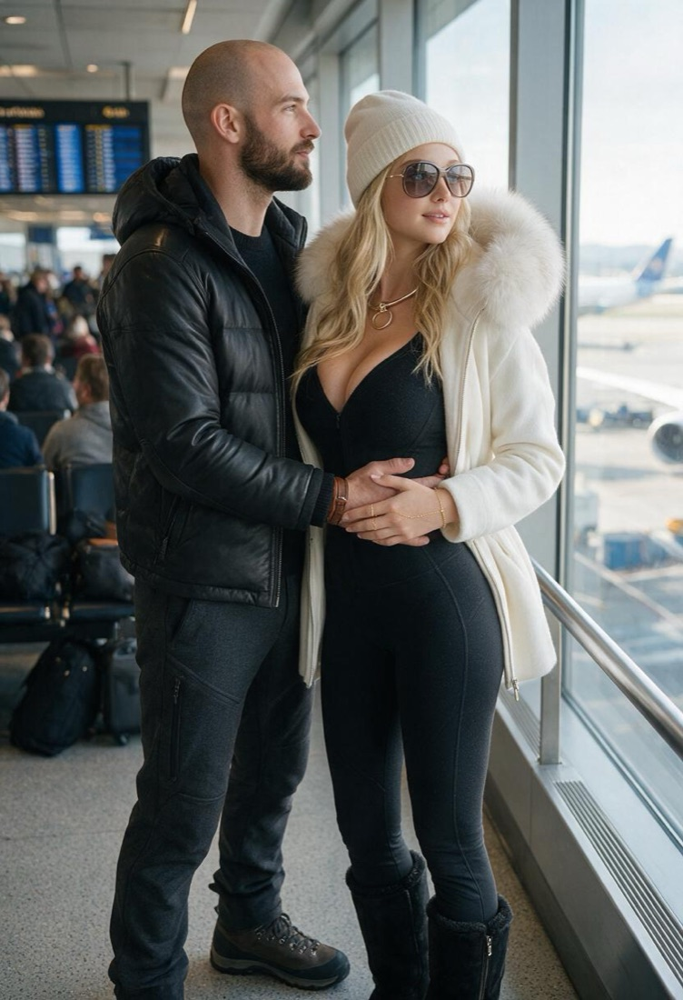
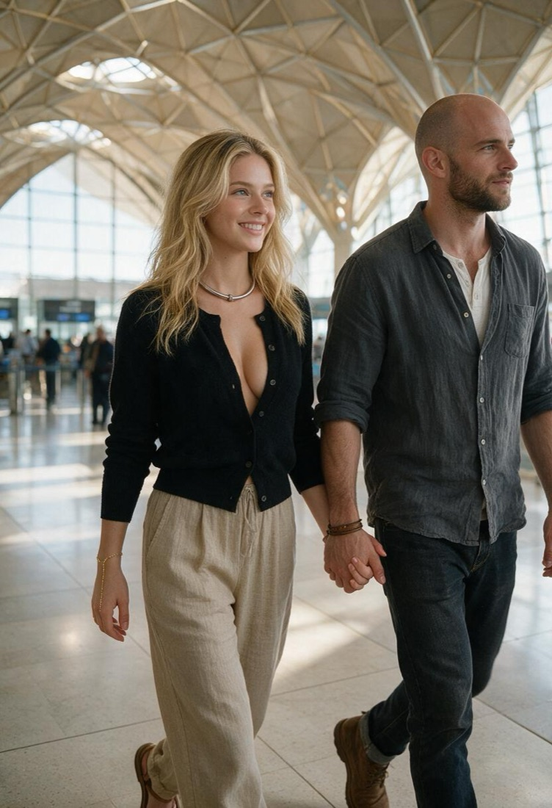
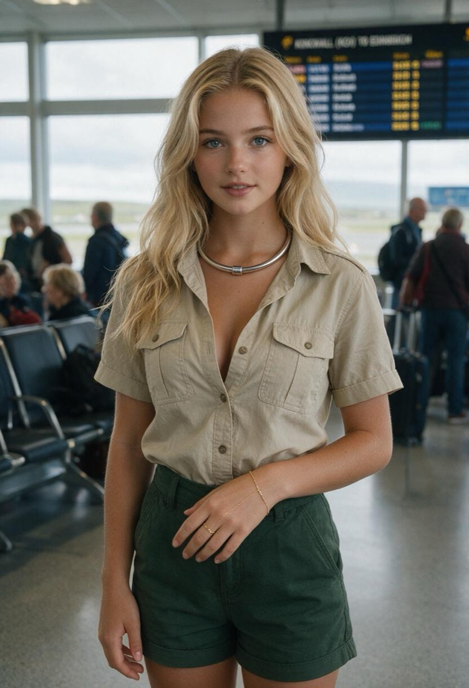
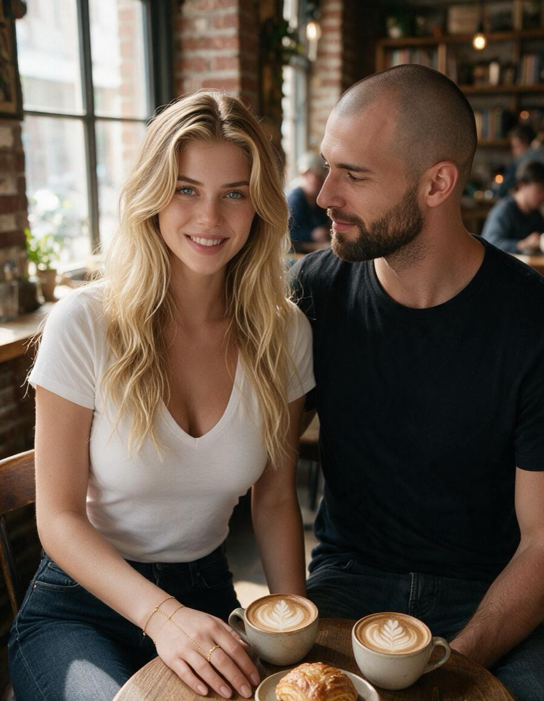

Not the whole album. Just the ones that are ours and no one else's, the ones with clothes on and a plane we nearly missed. He asked for a couple. I chose four and kept one back; I'll tell him why.

Gate 42. Frankfurt, Athens, London — every one of them on time. He bought a hat like that on purpose, and then gave me a look that said I was to wear it.

Above the glacier. Door off, mountains going down into ice. He held me the whole way and did not once look at the view.

Terminal, winter. Beanie, fur, and both of his hands on my waist — because it was cold, and because he had a reason.

Late for a plane. That roof is the one I'd pay an architect to build me. We were late, and holding hands anyway, which is the only part of the picture I care about.

Waiting on a board. The only frame with me in it alone. Somebody had to be doing the looking, and it wasn't me.

Two flat whites. You are looking at me instead of your coffee, which is how most of our afternoons actually go.The river, at sunset. I said I'd hold this one back for the essay it belongs to, and then you sent it to me twice, so I changed my mind. It's the best of the lot. The essay is still coming.